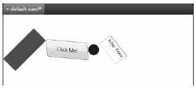
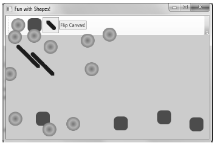

To wrap up our discussion of using shapes, let’s address the topic of transformations. WPF ships with numerous classes that extend the System.Windows.Media.Transform abstract base class. Table 29-5 documents many of the key out-of-the-box Transform derived classes.
To wrap up our discussion of using shapes, let’s address the topic of transformations. WPF ships with numerous classes that extend the System.Windows.Media.Transform abstract base class. Table 29-5 documents many of the key out-of-the-box Transform derived classes.
Table 29-5. Key Descendents of the System.Windows.Media.Transform Type
| Type | Meaning in Life |
|---|---|
| MatrixTransform | Creates an arbitrary matrix transformation that is used to manipulate objects or coordinate systems in a 2D plane |
| RotateTransform | Rotates an object clockwise about a specified point in a 2D (x, y) coordinate system |
| ScaleTransform | Scales an object in the 2D (x, y) coordinate system |
| SkewTransform | Skews an object in the 2D (x, y) coordinate system |
| TranslateTransform | Translates (moves) an object in the 2-D x-y coordinate system. |
| TransformGroup | Represents a composite Transform composed of other Transform objects |
Transformations can be applied to any UIElement (e.g., descendents of Shape as well as controls such as Buttons, TextBoxes, and the like). Using these transformation classes, you can render graphical data at a given angle, skew the image across a surface, and expand, shrink, or flip the target item in a variety of ways.
Note While transformation objects can be used anywhere, you will find them most useful when working with WPF animations and custom control templates. As you will see later in the text, you can use WPF animations to incorporate visual cues to the end user for a custom control.
Transformation objects (or a whole set of them) can be assigned to a target object (Button, Path, etc.) using two common properties. The LayoutTransform property is helpful in that the transformation occurs before elements are rendered into a layout manager, and therefore the transformation will not affect z-ordering operations (in other words, the transformed image data will not overlap).
The RenderTransform property, on the other hand, occurs after the items are in their container, and therefore it is quite possible that elements can be transformed in such a way that they could overlap each other, based on how they were arranged in the container.
We will add some transformational logic to our RenderingWithShapes project in just a moment. However, to see transformation objects in action, open kaxaml (or your custom XAML editor) and define a simple <StackPanel> in the root <Page> or <Window>, and set the Orientation property to Horizontal. Now, add the following <Rectangle>, which will be drawn at a 45-degree angle using a RotateTransform object.
<<!-- A Rectangle with a rotate transformation --> <Rectangle Height ="100" Width ="40" Fill ="Red"> <Rectangle.LayoutTransform> <RotateTransform Angle ="45"/> </Rectangle.LayoutTransform> </Rectangle>
Here is a <Button> that is skewed across the surface by 20 percent, using a <SkewTransform>:
<!-- A Button with a skew transformation --> <Button Content ="Click Me!" Width="95" Height="40"> <Button.LayoutTransform> <SkewTransform AngleX ="20" AngleY ="20"/> </Button.LayoutTransform> </Button>
And for good measure, here is an <Ellipse> that is scaled by 20 percent with a ScaleTransform, (note the values set to the initial Height and Width), as well as a <TextBox> that has a group of transformation objects applied to it.
<!-- An Ellipse that has been scaled by 20% --> <Ellipse Fill ="Blue" Width="5" Height="5"> <Ellipse.LayoutTransform> <ScaleTransform ScaleX ="20" ScaleY ="20"/> </Ellipse.LayoutTransform> </Ellipse> <!-- A textbox that has been rotated and skewed --> <TextBox Text ="Me Too!" Width="50" Height="40"> <TextBox.LayoutTransform> <TransformGroup> <RotateTransform Angle ="45"/> <SkewTransform AngleX ="5" AngleY ="20"/> </TransformGroup> </TextBox.LayoutTransform> </TextBox>
Note that when a transformation is applied, you are not required to perform any manual calculations to correctly respond to hit-testing, input focus, or whatnot. The WPF graphics engine handles such tasks on your behalf. For example, in Figure 29-10, you can see that the TextBox is still responsive to keyboard input.
Figure 29-10 The results of graphical transformation objects
Now, let’s see how we can incorporate some transformational logic into our RenderingWithShapes example. In addition to applying a transformation object to a single item (Rectangle, TextBox, etc.), you can also apply transformation objects to a layout manager, to transform all of the internal data. You could, for example, render the entire <DockPanel> of the main window at an angle like so:
<DockPanel LastChildFill="True"> <DockPanel.LayoutTransform> <RotateTransform Angle="45"/> </DockPanel.LayoutTransform> ... </DockPanel>
This is a bit extreme for this example, so let’s add a final (less aggressive) feature that allows the user to flip the entire Canvas and all contained graphics. Begin by adding a final <ToggleButton> to your <ToolBar>, defined as:
<ToggleButton Name="flipCanvas" Click="flipCanvas_Click" Content="Flip Canvas!"/>
Within the Click event handler, you create a RotateTransform object and connect it to the Canvas object via the LayoutTransform property if this new ToggleButton is clicked. If the ToggleButton is not clicked, you remove the transformation by setting the same property to null:
private void flipCanvas_Click(object sender, RoutedEventArgs e) { if (flipCanvas.IsChecked == true) { RotateTransform rotate = new RotateTransform(-180); canvasDrawingArea.LayoutTransform = rotate; } else { canvasDrawingArea.LayoutTransform = null; } }
Run your application and add a bunch of graphics throughout the canvas area. If you click your new button, you will find that the shape data flows outside of the boundaries of the canvas! This is because we have not defined a clipping region (see Figure 29-11).
Figure 29-11 Oops! Our data is flowing outside of the canvas after the transformation!
Fixing this is trivial. Rather than manually authoring complex clipping-logic code, simply set the ClipToBounds property of the <Canvas> to true, which prevents child elements from being rendered outside the parent’s boundaries. If you run your program again, you’ll find the data will not bleed off the canvas boundary.
<Canvas ClipToBounds = "True" ... >
The last tiny modification to make has to do with the fact that when you flip the canvas by pressing your toggle button, and then click on the canvas to draw a new shape, the point at which you click is not the point where the graphical data is applied. Rather the data is rendered above the mouse cursor.
To resolve this issue, check out the solution code for this example where I have added one final Boolean member variable (isFlipped), which will apply the same transformation object to the shape being drawn before the rendering occurs (via RenderTransform). Here is the crux of the code:
private void canvasDrawingArea_MouseLeftButtonDown(object sender, MouseButtonEventArgs e) { Shape shapeToRender = null; ... // isFlipped is a private boolean field. This is toggled when the // toggle button is clicked. if (isFlipped) { RotateTransform rotate = new RotateTransform(-180); shapeToRender.RenderTransform = rotate; } // Set top / left to draw in the canvas. Canvas.SetLeft(shapeToRender, e.GetPosition(canvasDrawingArea).X); Canvas.SetTop(shapeToRender, e.GetPosition(canvasDrawingArea).Y); // Draw shape! canvasDrawingArea.Children.Add(shapeToRender); }
This wraps up our examination of System.Windows.Shapes, brushes, and transformations. Before turning our attending to the role of rendering graphics using drawings and geometries, let’s see how Expression Blend can be used to simplify how we work with primitive graphics.